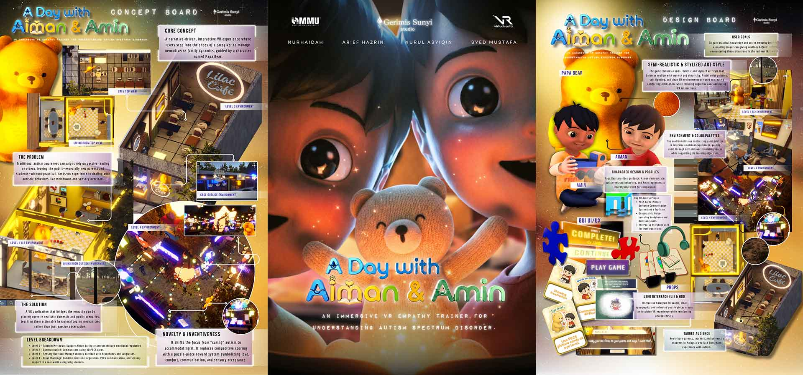
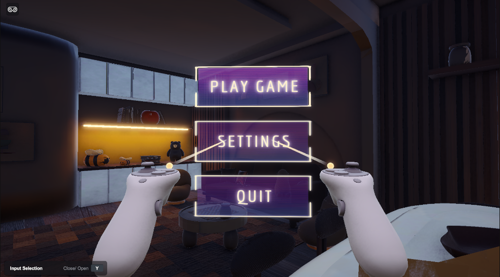
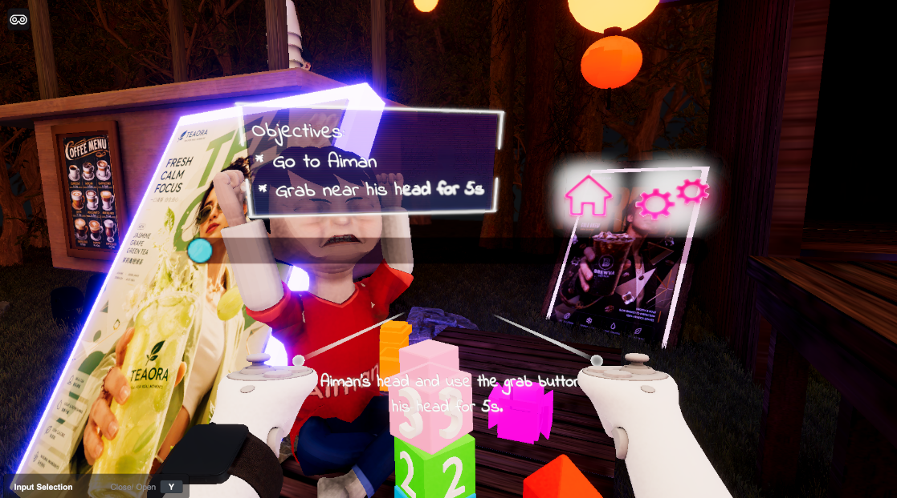

INTERACTIVE & GAME DESIGN
Gameplay • Interaction • UI/UX • Experience Design
I design interactive experiences by combining gameplay, user interaction and visual storytelling. My work focuses on creating clear player experiences through mechanics, interaction systems, UI, level flow and thoughtful experience design.
Designing for Interaction
Good interactive design makes the user's actions feel clear, meaningful, and instantly responsive. Every mechanic should serve a direct purpose in guiding the user forward.
VR Autism Awareness: Parenting Trainer
A VR educational simulation designed to help parents understand how to respond to different situations involving autistic children through active engagement rather than passive learning.

Core Design Goals
- Create an educational yet deeply engaging experience
- Teach through interaction rather than passive information
- Make scenarios intuitive and easy to navigate
- Give players distinct, clear objectives
- Provide immediate, meaningful feedback
- Encourage empathy and spatial understanding
Scenario Design Breakdown
Objective: Approach and support Aiman during a distressing event.
Focus: Calm player approach, empathetic response choice, and real-time behavioral feedback.
Objective: Utilize PECS (Picture Exchange Communication System) cards.
Focus: Spatial object selection, communicative clarity, player guidance, and step progression.
Objective: Manage a sensory-challenging restaurant setting.
Focus: Environmental stress cues, sensory tools (headphones/sunglasses), and awareness building.
Gameplay Flow Architecture
Standard user journey mapped across interactive scenarios.
Interaction Design Framework
Player Interaction
Designing how the player approaches, selects, and physically manipulates objects or engages with characters in 3D space.
Environmental Interaction
Leveraging atmospheric cues, lighting adjustments, and dynamic objects to shape surrounding gameplay and story.
UI Interaction
Building intuitive spatial menus, tactile world-space buttons, and level selectors that keep users in full immersion.
Feedback Systems
Combining visual glow effects, spatial audio triggers, and UI confirmations to validate successful player actions.
Interactive Systems Design
VR Button Interaction
A timed interaction mechanic requiring players to press buttons within precise windows.
Timing • Inputs • Success FeedbackCharacter Spawning & Choice
Selecting characters through interface choices and instantiating them dynamically into the scene.
UI Selection • Prefab Spawning • State UpdatesInteractive Audio Matrix
Granular audio controls allowing users to adjust dynamic music and narration levels independently.
Spatial Audio • UI Sliders • User ControlUI / UX Design Philosophy
Clarity → Interaction → Feedback → Ease of Use


World-Space UI
Diegetic, floating panels that exist naturally within 3D/VR space.
Character Selection
Visual choice cards that provide real-time hover and selection responses.
Information Panels
Minimalist overlays designed to display instructions without cluttering viewports.
Design Process
I begin by identifying core user goals and target context, mapping the interaction flow, and building functional prototypes. Iterative testing refines usability and ensures interactions feel natural.
Design Skills Matrix
Game Design
Gameplay Mechanics, Player Objectives, Scenario Design, Game Flow, Interaction Design
UX / UI Design
User Flow, Interactive UI, World-Space UI, Spatial Menus, Feedback Systems
Experience Design
Immersive Experiences, Educational Simulations, Environmental Interaction
Prototyping & Tools
Unity Prototyping, Interaction Testing, Iterative Design, Blender, VS Code, Git/GitHub
Design With Purpose
I believe interactive experiences are strongest when every action has a purpose. Whether crafting a game mechanic, spatial UI, or immersive simulation, I focus on keeping the experience clear, responsive, and meaningful.